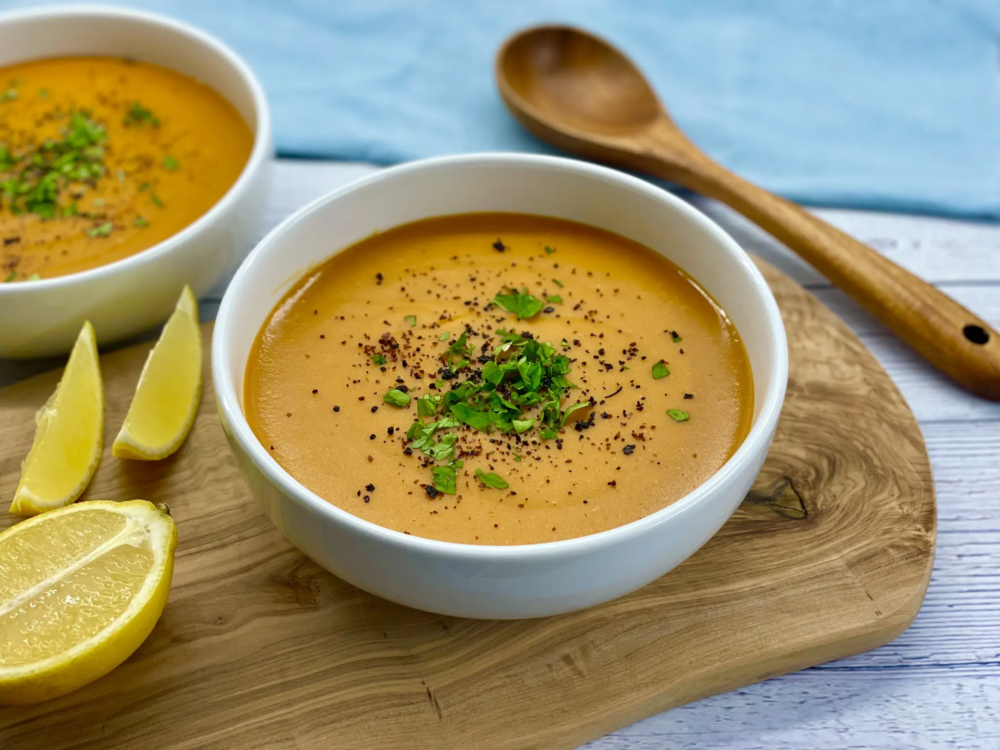

Lentil Soup

A warm and filling soup that can be served all year round.
You will need:
- onion
- garlic
- potatoes
- carrots
- pul biber
- black pepper
- fresh parsley
- lentils
- stock
- lemon
Prepare as follows:
- Cut onions and fry till softened
- add the cut garlic and fry for a minute
- add the diced carrots and potatoes and fry for another minute
- add the lentils and follow up with adding the stock
- Let it simmer until the lentils have softened
- Turn off the heat and use a hand blender to blend it all till no chunks remain
- Serve it with a slice of lemon, black pepper, pul biber and top it with some fresh parsley